Косвенный метод оценки качества намагничивания динамических головок посредством принудительно-свободных колебаний диффузора
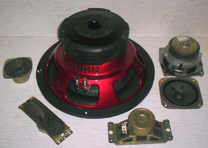
1. Введение
Для преобразования электрических колебаний в звуковые широко используются электродинамические громкоговорители (динамические головки, динамики), принцип работы которых основан на взаимодействии прикрепленной к диффузору токовой катушки с постоянным магнитным полем магнитной системы [1]. Это взаимодействие описывается законом Ампера [6]. Переменный ток, подаваемый в катушку, соответствует возбуждаемым звуковым колебаниям. Катушка помещается в узкий рабочий зазор, в котором создается постоянное магнитное поле (обычно с помощью постоянных магнитов различных марок и составов [7]). Ширина зазора может составлять доли миллиметра - несколько миллиметров (рис. 1.1).
Рис. 1.1. Пример магнитной системы динамической головки: кольцевой постоянный магнит из феррита бария или стронция помещен между двумя фланцами из малоуглеродистой стали, в верхнем фланце прорезано круглое отверстие, в центре находится цилиндрический керн также из малоуглеродистой стали. Рабочий зазор, в который помещается катушка, образован верхним стальным кольцом и центральным керном.
Рассчитанное с помощью метода конечных элементов [9, 10] магнитное поле в одной из подобных систем (рис. 1.1) показано на рис. 1.2. Порядок величины магнитной индукции в рабочем зазоре 1 Тл.

Рис. 1.2. Распределение магнитного потока в системе с кольцевым ферритовым магнитом (показана половина осесимметричной системы).
При сборке подобных магнитных систем удобнее использовать ненамагниченные или предварительно размагниченные постоянные магниты, а впоследствии после сборки намагничивать их в установках намагничивания [11, 12, 13]. Во-первых, это облегчает сборку и, во-вторых, позволяет избежать некоторого ухудшения магнитных свойств магнита при сборке. Напряженность намагничивающего поля должна, как правило, обеспечивать намагничивание постоянного магнита до насыщения. Если постоянный магнит магнитной системы динамика недомагничен, то динамик не обеспечивает требуемую мощность и качество звучания. Одним из способов оценки качества намагничивания является измерение магнитной индукции в рабочем зазоре. Напрямую измерить магнитную индукцию в зазоре можно с помощью тесламетра [2, 3, 8, 14], щуп которого имеет подходящие размеры (толщина до миллиметра, ширина - несколько миллиметров). Внешний вид подобного щупа на основе датчика Холла ПХЭ606118В [4] показан на рис. 1.3.
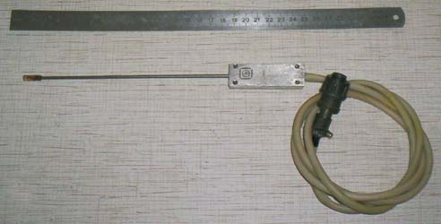
Рис. 1.3. Щуп с датчиком Холла типа ПХЭ606118В: толщина щупа 0.9 мм, ширина - 4 мм.
Однако на собранной динамической головке провести подобные прямые измерения магнитной индукции в рабочем зазоре невозможно. Также малогабаритные динамики могут иметь очень узкий рабочий зазор (несколько долей миллиметра), для которого затруднительно подобрать измерительный щуп.
2. Способ косвенной оценки степени намагниченности магнитной системы динамика
Рассмотрим упрощенную схему динамической головки с кольцевым постоянным магнитом, показанную на рис. 2.1. Головка состоит из кольцевого постоянного магнита, помещенного между двумя фланцами из малоуглеродистой стали, в верхнем фланце прорезано круглое отверстие, в центре находится цилиндрический керн также из малоуглеродистой стали. Рабочий зазор, в который помещается катушка, образован верхним стальным кольцом и центральным керном. Катушка жестко соединена с диффузором, упруго прикрепленным к диффузородержателю. Катушку с диффузором можно рассматривать как груз массой m, закрепленный на пружине с коэффициентом упругости k.
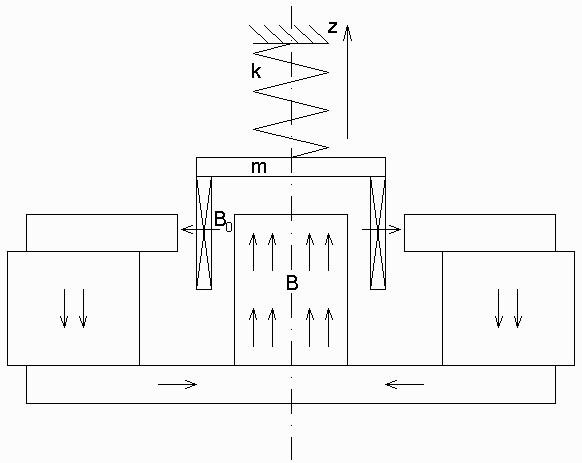
Рис. 2.1. Схема динамика с кольцевым магнитом для расчета ЭДС катушки при движении диффузора: m - масса подвижной части, k - коэффициент упругости подвеса диффузора, B0 - магнитная индукция в рабочем зазоре, B - магнитная индукция в центральном керне.
Динамик является электромеханическим преобразователем электрической мощности в звуковые колебания, который по сути своей конструкции обладает свойством обратимости, т. е. при механических колебаниях диффузора на выводах катушки динамика возникает электродвижущая сила (ЭДС) в соответствии с законом электромагнитной индукции Фарадея [6]:
где Y – изменяющееся со временем t потокосцепление катушки с магнитным полем. Эта ЭДС тем больше, чем больше скорость изменения магнитного потока через катушку. Полагая, что весь магнитный поток с индукцией B равномерно распределен в центральном керне площадью S и захватывает только часть D катушки (0 < D < 1) с общим числом витков N, равномерно распределенным по высоте, имеем:
Выражение для ЭДС можно переписать в виде:
где dz/dt – скорость движения катушки вдоль оси z. Если диффузор с прикрепленной к нему катушкой совершает свободные колебания (которые в первом приближении можно считать незатухающими) с амплитудой z0 и циклической частотой w0, то:
Циклическая частота собственных колебаний w0 определяется жесткостью подвеса k и массой подвижной части m:
Изменение потокосцепления dY при смещении катушки на dz:
Здесь N – число витков катушки, H – ее высота, N/H – плотность равномерной намотки (число витков на единицу длины). При движении катушки вдоль оси z в положительном направлении магнитный поток в ней уменьшается (отсюда знак минус). Тогда для ЭДС свободно колеблющейся катушки (без учета затухания):
Амплитуда колебаний z0 равна начальному отклонению катушки от положения равновесия при подаче в нее импульса возбуждающего тока достаточной длительности с амплитудой I0 и определяется законами Ампера [6] и Гука [15], т. е. пропорциональна току I0 и магнитной индукции B0 в зазоре высотой h, суммарной длине проводника на окружности радиуса катушки R и обратно пропорциональна жесткости подвеса k (когда сила Ампера направлена вверх по оси z, катушка смещается также вверх):
Таким образом:
То есть при прочих равных условиях амплитуда ЭДС свободных колебаний катушки тем больше, чем больше магнитная индукция в центральном керне B и магнитная индукция в рабочем зазоре B0. Обе эти величины примерно в равной степени определяются намагниченностью постоянного магнита магнитной системы динамика. Соответственно, чем она больше, тем больше амплитуда ЭДС. Когда намагниченность достигает насыщения, то и амплитуда ЭДС перестает возрастать. Также амплитуда ЭДС зависит от величины возбуждающего тока I0, с помощью которого создается начальное отклонение диффузора. При малых отклонениях амплитуда ЭДС пропорциональна возбуждающему току или, соответственно, возбуждающему напряжению. Таким образом, по амплитуде ЭДС катушки динамика при свободных колебаниях его диффузора можно оценить качество намагничивания его магнитной системы. Так как в реальных условиях колебания являются затухающими, то в качестве фактора оценки можно брать либо амплитуду ЭДС первой полуволны, либо сумму ЭДС двух первых полуволн.
Фазировка динамика определяется обычно таким образом, что при подаче на плюсовую клемму положительного напряжения (относительно другой клеммы) диффузор динамика смещается наружу (т. е. вверх на рис. 2.1). Обратное смещение диффузора соответствует инверсии прилагаемого напряжения. ЭДС катушки, в свою очередь, обеспечивает ток, препятствующий движению диффузора, т. е. когда диффузор будет возвращаться к положению равновесия, первая полуволна ЭДС будет отрицательной.
Вышеизложенное также справедливо и для других типов магнитных систем динамических головок, например, в которых вместо центрального керна используется постоянный магнит, а замыкание магнитного потока осуществляется через ферромагнитную (стальную) чашку.
Для возбуждения свободных затухающих колебаний можно использовать генератор прямоугольных импульсов с заданным выходным током или напряжением, подаваемым на выводы динамика. Контролировать амплитуду ЭДС первых полуволн удобнее с помощью осциллографа, вход которого подключается к тем же выводам динамика, что и генератор.
3. Схема измерительной установки
Возможная схема установки для измерения электрического отклика динамической головки при принудительном ее возбуждении прямоугольными импульсами показана на рис. 3.1.
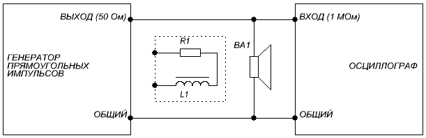
Рис. 3.1. Схема измерительной установки. Генератор прямоугольных импульсов FY6900, осциллограф UTD2102CEL-R. Цепь R1L1 - электрический эквивалент динамика BA1.
В качестве генератора прямоугольных импульсов использовался генератор сигналов FY6900 в режиме генерации прямоугольного сигнала частотой 2 Гц с коэффициентом заполнения 50 %, двойной амплитудой 10 В и сдвигом 5 В (т. е. +10 В от нулевого сигнала, рис. 3.2). Внутреннее сопротивление генератора примерно 50 Ом. За счет него отсутствует возможная перегрузка динамика, а также уменьшается его демпфирование сопротивлением источника сигнала. В качестве измерительного осциллографа использовался осциллограф UTD2102CEL-R, включенный в ждущем однократном режиме.
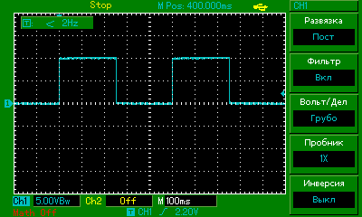
Рис. 3.2. Сигнал с генератора прямоугольных импульсов без нагрузки (динамик не подключен). Амплитуда +10 В, период 500 мс, частота 2 Гц.
При измерениях динамик устанавливался на рабочий стол диффузором кверху (рис. 3.3), чтобы уменьшить акустическое демпфирование.
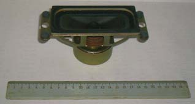
Рис. 3.3. Положение динамика при проведении измерений.
Внешний вид последовательности импульсов на клеммах динамика показан на рис. 3.4. На рис. 3.5 участок на спаде импульса с измеряемыми затухающими колебаниями показан в развернутом виде. Резонансная частота колебаний составляет примерно 160 Гц. Для первых полуволн (отрицательной и положительной) двойной размах амплитуды DV равен 480 мВ.
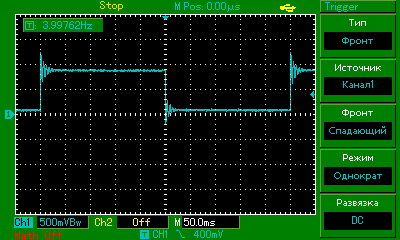
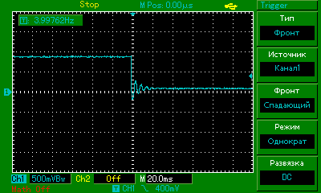
Рис. 3.4. Последовательность импульсов на клеммах динамика. Частота следования импульсов 2 Гц. Справа - участок на спаде импульса с исследуемыми затухающими колебаниями.
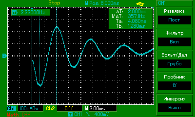
Рис. 3.5. Затухающие колебания динамика на спаде импульса. Размах двойной амплитуды DV 480 мВ. Резонансная частота примерно 160 Гц.
4. Испытания различных типов динамиков
Для частичного размагничивания, а также частичного и полного намагничивания магнитных систем динамических головок при проведении испытаний использовалась установка импульсного намагничивания [11] в составе емкостного накопителя энергии [5] 8 кДж 900 В и индуктора с рабочей зоной диаметром 250 мм глубиной до 100 мм [13]. Внешний вид установки показан на рис. 4.1. Примерная зависимость амплитуды магнитной индукции в рабочей зоне (на поверхности нижнего полюсного наконечника индуктора на расстоянии 30 мм от оси) от уровня заряда емкостного накопителя приведена в таблице 4.1 и на рис. 4.2. Амплитуда магнитной индукции увеличивается ближе к поверхности катушки индуктора и уменьшается с удалением от нижнего полюсного наконечника.
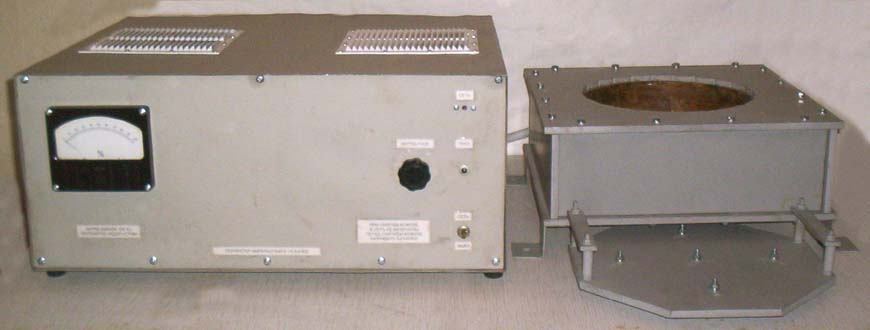
Рис. 4.1. Установка импульсного намагничивания в составе емкостного накопителя энергии 8 кДж 900 В и индуктора с рабочей зоной диаметром 250 мм.
Таблица 4.1. Примерная зависимость амплитуды магнитной индукции в рабочей зоне индуктора (на поверхности нижнего полюсного наконечника на расстоянии 30 мм от оси) от уровня заряда емкостного накопителя энергии 8 кДж 900 В.
| Уровень заряда, % | Амплитуда магнитной индукции, Тл |
| 0 | 0 |
| 40 | 0.40 |
| 50 | 0.48 |
| 60 | 0.57 |
| 70 | 0.64 |
| 80 | 0.72 |
| 90 | 0.79 |
| 100 | 0.87 |
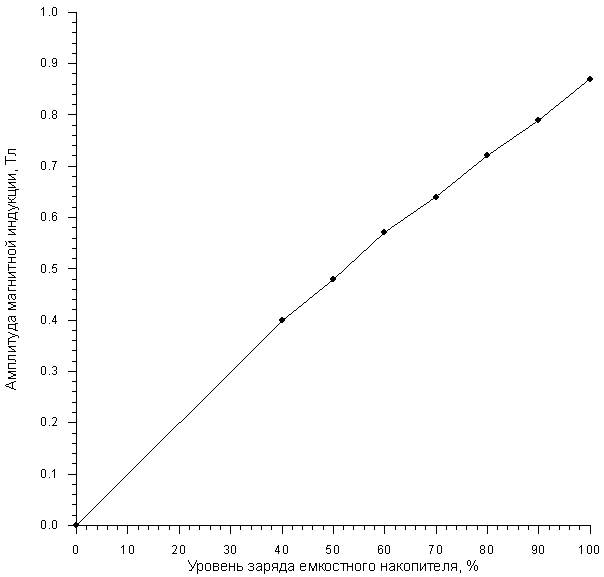
Рис. 4.2. Зависимость амплитуды магнитной индукции в рабочей зоне индуктора (на поверхности нижнего полюсного наконечника на расстоянии 30 мм от оси) от уровня заряда емкостного накопителя энергии 8 кДж 900 В.
Испытания проводились на различных типах динамиков с магнитной системой на основе феррит-бариевых (феррит-стронциевых) кольцевых магнитов.
4.1. Низкочастотный динамик 25ГДН-1-8-80
Внешний вид динамика показан на рис. 4.1.1. Его магнитная система выполнена на основе кольцевого постоянного феррит-бариевого магнита диаметром 85 мм толщиной 15 мм.
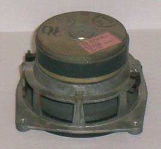
Рис. 4.1.1. Низкочастотный динамик 25ГДН-1-8-80. Диаметр кольцевого ферритового магнита 85 мм, высота 15 мм.
Измеренная исходная ЭДС принудительно-свободных колебаний диффузора динамика (до проведения процедур перемагничивания) показана на рис. 4.1.2. Двойная амплитуда ЭДС катушки при начальных колебаниях диффузора составляет 784 мВ. Резонансная частота примерно 80 Гц.
4.1.2. ЭДС динамика 25ГДН-1-8-80 при принудительно-свободных колебаниях его диффузора до перемагничивания. Амплитуда двойная 784 мВ. Частота резонанса примерно 80 Гц.
Далее было произведено частичное размагничивание магнитной системы динамика и начато последовательное намагничивание с увеличением уровня заряда емкостного накопителя энергии. ЭДС динамика при принудительно-свободных колебаниях его диффузора для каждого уровня заряда при намагничивании показана на рис. 4.1.3, 4.1.4.
Рис. 4.1.3. ЭДС динамика 25ГДН-1-8-80 при принудительно-свободных колебаниях его диффузора после последовательного намагничивания при уровнях заряда 40 % и 60 % емкостного накопителя энергии.
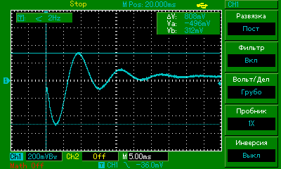
Рис. 4.1.4. ЭДС динамика 25ГДН-1-8-80 при принудительно-свободных колебаниях его диффузора после последовательного намагничивания при уровнях заряда 80 % и 100 % емкостного накопителя энергии.
Из вышеприведенных рисунков видно, что при 80 % заряда емкостного накопителя постоянный магнит магнитной системы динамика достигает насыщения по намагниченности. Этот уровень соответствует амплитуде магнитной индукции в рабочей зоне индуктора около 0.8 Тл.
4.2. Мощный низкочастотный динамик
Магнитная система мощного низкочастотного динамика, внешний вид которого показан на рис. 4.2.1, построена на основе двух кольцевых ферритовых магнитов внешним диаметром 156 мм и высотой 20 мм каждый.
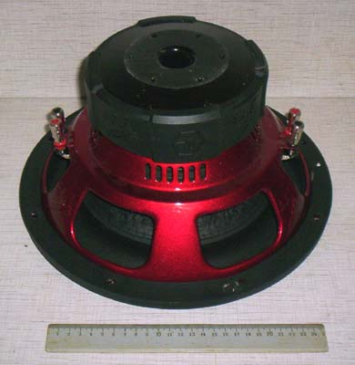
Рис. 4.2.1. Мощный низкочастотный динамик. Диаметр кольцевого ферритового магнита 156 мм, высота 40 мм.
Измеренная ЭДС принудительно-свободных колебаний диффузора мощного низкочастотного динамика до проведения процедур перемагничивания показана на рис. 4.2.2. Двойная амплитуда ЭДС одной катушки при начальных колебаниях диффузора составляет 178 мВ. Резонансная частота примерно 33 Гц.
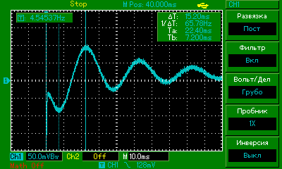
4.2.2. ЭДС мощного низкочастотного динамика при принудительно-свободных колебаниях его диффузора до перемагничивания. Амплитуда двойная 178 мВ. Частота резонанса примерно 33 Гц.
Далее было произведено частичное размагничивание и начато последовательное намагничивание магнитной системы динамика с увеличением уровня заряда емкостного накопителя энергии. ЭДС одной катушки динамика при принудительно-свободных колебаниях его диффузора для каждого уровня заряда при намагничивании показана на рис. 4.2.3, 4.2.4.
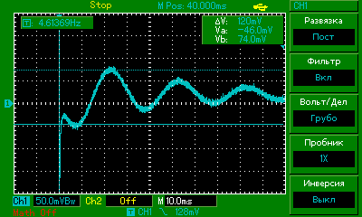 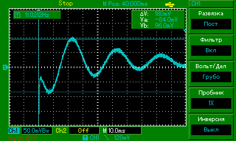
Рис. 4.2.3. ЭДС мощного низкочастотного динамика при принудительно-свободных колебаниях его диффузора после последовательного намагничивания при уровнях заряда 40 % и 60 % емкостного накопителя энергии.
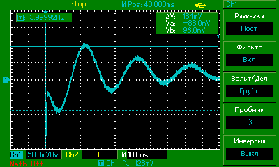
Рис. 4.2.4. ЭДС мощного низкочастотного динамика при принудительно-свободных колебаниях его диффузора после последовательного намагничивания при уровнях заряда 80 % и 100 % емкостного накопителя энергии.
Магнитная система мощного низкочастотного динамика достигает насыщения при 80 % заряда емкостного накопителя, что примерно соответствует амплитуде магнитной индукции в рабочей зоне индуктора около 0.8 Тл.
4.3. Широкополосный динамик средней мощности
Магнитная система широкополосного динамика средней мощности (рис. 4.3.1) выполнена на основе кольцевого постоянного феррит-бариевого магнита диаметром 60 мм толщиной 9 мм.
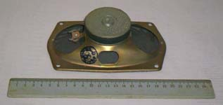
Рис. 4.3.1. Широкополосный динамик средней мощности. Диаметр кольцевого ферритового магнита 60 мм, высота 9 мм.
Измеренная ЭДС принудительно-свободных колебаний диффузора динамика до проведения процедур перемагничивания показана на рис. 4.3.2. Двойная амплитуда ЭДС катушки при начальных колебаниях диффузора составляет 336 мВ. Резонансная частота примерно 115 Гц.
4.3.2. ЭДС широкополосного динамика средней мощности при принудительно-свободных колебаниях его диффузора до перемагничивания. Амплитуда двойная 336 мВ. Частота резонанса примерно 115 Гц.
Далее было произведено частичное размагничивание магнитной системы динамика и начато последовательное намагничивание с увеличением уровня заряда емкостного накопителя энергии. ЭДС динамика при принудительно-свободных колебаниях его диффузора для каждого уровня заряда при намагничивании показана на рис. 4.3.3, 4.3.4.
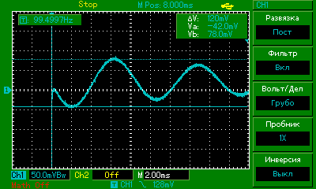
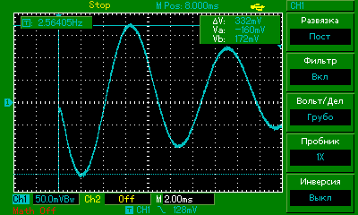
Рис. 4.3.3. ЭДС широкополосного динамика средней мощности при принудительно-свободных колебаниях его диффузора после последовательного намагничивания при уровнях заряда 40 % и 60 % емкостного накопителя энергии.
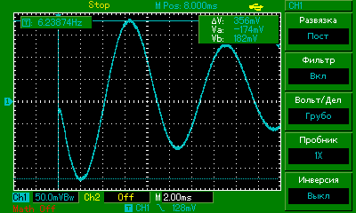
Рис. 4.3.4. ЭДС широкополосного динамика средней мощности при принудительно-свободных колебаниях его диффузора после последовательного намагничивания при уровнях заряда 80 % и 100 % емкостного накопителя энергии.
Рис. 4.3.3 и 4.3.4 демонстрируют, что при 80 % заряда емкостного накопителя магнитная система динамика достигает насыщения по намагниченности. Этот уровень соответствует амплитуде магнитной индукции в рабочей зоне индуктора около 0.8 Тл.
4.4. Мощный широкополосный динамик
Магнитная система мощного широкополосного динамика выполнена на основе кольцевого постоянного ферритового магнита диаметром 114 мм толщиной 20 мм. Внешний вид динамика показан на рис. 4.4.1.
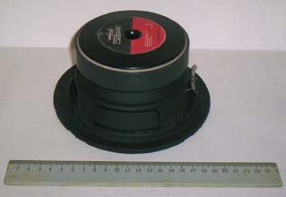
Рис. 4.4.1. Мощный широкополосный динамик. Диаметр кольцевого ферритового магнита 114 мм, высота 20 мм.
Измеренная исходная ЭДС принудительно-свободных колебаний диффузора динамика (до проведения процедур перемагничивания) показана на рис. 4.4.2. Двойная амплитуда ЭДС катушки динамика при начальных колебаниях диффузора составляет 548 мВ. Резонансная частота примерно 88 Гц.
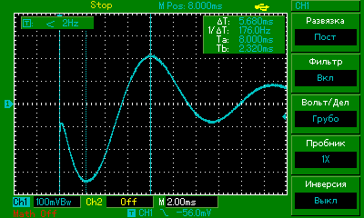
4.4.2. ЭДС мощного широкополосного динамика при принудительно-свободных колебаниях его диффузора до перемагничивания. Амплитуда двойная 548 мВ. Частота резонанса примерно 88 Гц.
Далее было произведено частичное размагничивание магнитной системы динамика и начато последовательное намагничивание с увеличением уровня заряда емкостного накопителя энергии. ЭДС динамика при принудительно-свободных колебаниях его диффузора для каждого уровня заряда при намагничивании показана на рис. 4.4.3, 4.4.4.
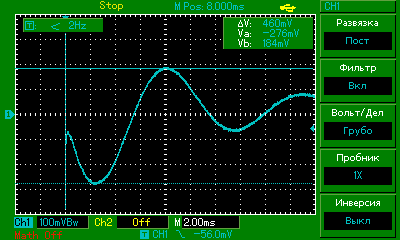
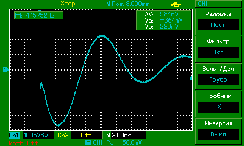
Рис. 4.4.3. ЭДС мощного широкополосного динамика при принудительно-свободных колебаниях его диффузора после последовательного намагничивания при уровнях заряда 40 % и 60 % емкостного накопителя энергии.
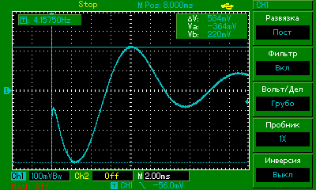
Рис. 4.4.4. ЭДС мощного широкополосного динамика при принудительно-свободных колебаниях его диффузора после последовательного намагничивания при уровнях заряда 80 % и 100 % емкостного накопителя энергии.
Насыщение магнитной системы мощного широкополосного динамика достигается при 60 % заряда емкостного накопителя энергии (амплитуда магнитной индукции 0.6 Тл).
5. Выводы
Предложен метод косвенной оценки качества намагничивания
динамиков в собранном виде при отсутствии доступа к рабочему зазору магнитной
системы посредством измерения ЭДС катушки при принудительно-свободных колебаниях
диффузора.
Сконструирована и испытана простая установка для косвенного контроля качества
намагничивания вышеуказанным методом.
Проведены опыты и измерения, подтверждающие справедливость сделанных
предположений и расчетов.
На основе проведенных опытов установлено, что импульсного магнитного поля с
амплитудой индукции 0.8 Тл вполне достаточно для намагничивания магнитных систем
динамиков на основе ферритовых магнитов, что подтверждается и иными методиками
контроля, например, прямым измерением магнитной индукции в рабочем зазоре.
Ссылки:
04.02.2023
Альтернативные источники
энергии
Компьютеры и
Интернет
Магнитные поля
Механотронные системы
Перспективные
разработки
Электроника и
технология